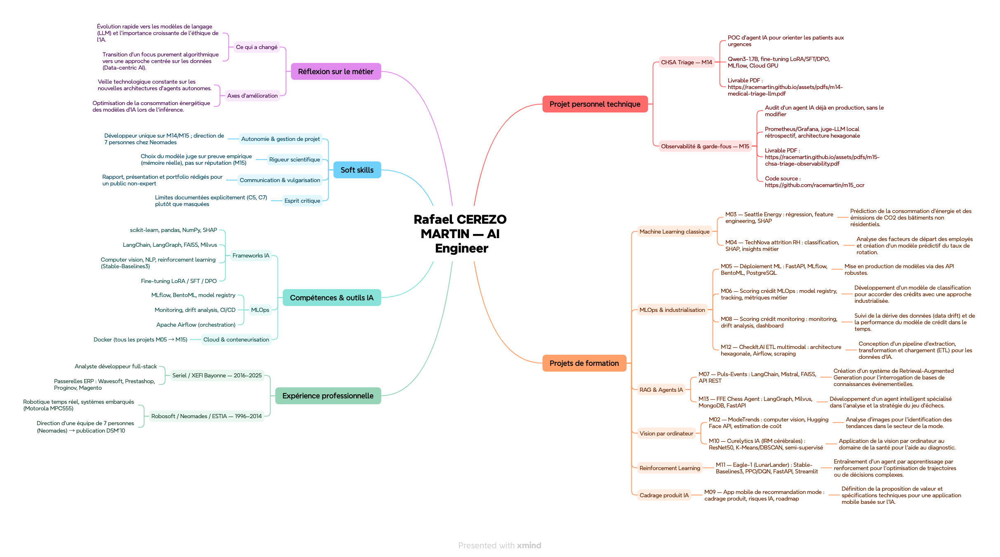

Étape 2 — Construisez votre portfolio en situation professionnelle

| Projet | Thème | Compétences / outils mobilisés | Livrable |
|---|---|---|---|
| M02 | ModeTrends — segmentation vestimentaire | Computer vision, Hugging Face API, estimation de coût | PDF ↗ |
| M03 | Seattle Energy — consommation & CO₂ | Régression, feature engineering, interprétabilité (SHAP) | PDF ↗ |
| M04 | TechNova — attrition RH | Classification, analyse RH, SHAP & insights métier | PDF ↗ |
| M05 | Déploiement d'un modèle ML | FastAPI, MLflow, BentoML, PostgreSQL | PDF ↗ |
| M06 | Scoring crédit — MLOps partie 1 | Model registry, tracking, métriques métier | PDF ↗ |
| M07 | Puls-Events — assistant RAG culturel | LangChain, Mistral, FAISS, API REST | PDF ↗ |
| M08 | Scoring crédit — déploiement & monitoring | Monitoring, drift analysis, dashboard | PDF ↗ |
| M09 | App mobile de recommandation mode | Cadrage produit, risques IA, roadmap | PDF ↗ |
| M10 | Curelytics IA — IRM cérébrales | ResNet50, K-Means/DBSCAN, semi-supervisé | PDF ↗ |
| M11 | Eagle-1 — agent RL LunarLander | Stable-Baselines3, PPO/DQN, FastAPI, Streamlit | PDF ↗ |
| M12 | CheckIt.AI — fake news multimodal | Architecture hexagonale, Apache Airflow, scraping | PDF ↗ |
| M13 | FFE Chess Agent — apprentissage des échecs | LangGraph, Milvus, MongoDB, FastAPI | PDF ↗ |